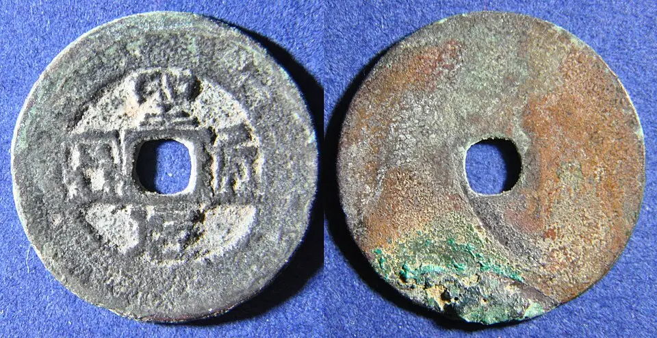
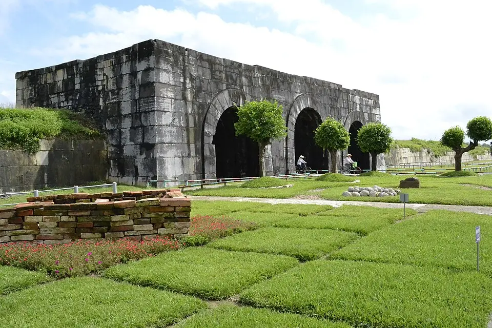

Hồ Quý Ly in tiền giấy từ năm 1396
Năm 1396, cả nước Đại Việt phải mang tiền đồng đi đổi lấy tiền giấy. Ai giữ riêng tiền đồng bị xử như tội làm tiền giả.

Năm 1396, khi vẫn còn là quyền thần dưới triều Trần, Hồ Quý Ly cho in một loại tiền mới tên là Thông bảo hội sao. In xong, triều đình ra lệnh cho dân cả nước đến đổi: một quan tiền đồng lấy một quan hai tiền giấy. Tiền đồng thu về được cất ở kho Ngao Trì trong kinh thành và ở trị sở các huyện. Đây được cho là tiền giấy đầu tiên ở Việt Nam. Nó cũng là một trong những cải cách gây tranh cãi nhất của một con người gây tranh cãi.
In xong, triều đình ra lệnh cho dân cả nước đến đổi: một quan tiền đồng lấy một quan hai tiền giấy.
Tờ tiền trông thế nào?
Theo các ghi chép được dẫn trên Wikipedia tiếng Việt, mỗi mệnh giá in một hình riêng. Tờ 30 đồng vẽ sóng, tờ 1 tiền vẽ mây, tờ 2 tiền vẽ rùa, tờ 3 tiền vẽ lân, tờ 5 tiền vẽ phượng, tờ 1 quan vẽ rồng. Ai làm tiền giả bị xử tử, tài sản bị tịch thu. Ai tiêu riêng hay chứa riêng tiền đồng bị phạt như tội làm tiền giả.
Tiền giấy không do Hồ Quý Ly phát minh. Nhà Tống ở Trung Quốc đã dùng nó từ khoảng ba thế kỷ trước. Nhà Nguyên sau đó in quá nhiều, khiến tiền mất giá nặng. Tiền giấy của Hồ Quý Ly cũng không thoát khỏi thất bại.
Vì sao tiền giấy thất bại?


Tờ tiền rất dễ làm giả. Wikipedia dẫn ví dụ Nguyễn Nhữ Cái, người nổi loạn ở núi Thiết Sơn, đã tự in tiền giả để tiêu. Mực in cũng không bền: dính mưa là nhòe, người giữ tiền coi như mất của. Tiền đồng thì không sợ nước.
Triều đình phải dùng thêm luật để giữ tiền giấy. Năm 1401 lập kho thường bình, phát tiền giấy mua thóc để bình ổn giá. Năm 1403 đặt chức Thị giám coi chợ, ban hành cân, thước, đấu, thưng và định giá tiền giấy. Theo sử cũ, người buôn bán phần nhiều chê tiền giấy, nên triều đình lại đặt luật xử tội ai không chịu tiêu. Khi nhà Hồ mất, tiền giấy cũng mất theo.
Có ý kiến cho rằng mục đích thật không chỉ là tài chính. Thu tiền đồng về cũng là thu nguyên liệu đúc vũ khí, vì súng thời đó làm bằng đồng.
Sử sách chép gì


Các sự kiện chính được chép trong Đại Việt sử ký toàn thư. Các sử gia đời sau phần lớn chê Hồ Quý Ly. Ngô Sĩ Liên gọi cha con họ Hồ là "loạn thần tặc tử". Về tiền giấy, Phan Huy Chú trong Lịch triều hiến chương loại chí nhận xét rằng tờ tiền chỉ là mảnh giấy vuông, phí tổn vài đồng, mà đổi lấy vật đáng năm, sáu trăm đồng của người ta. Đó là đánh giá của sử gia nho học, viết khi nhà Hồ đã bị coi là kẻ cướp ngôi. Một số học giả hiện đại lại ca ngợi cải cách này là "đi trước thời đại". Cả hai cách nhìn đều cần đọc cùng nhau. Nhưng tiền giấy chỉ là một mảnh trong một kế hoạch lớn hơn.
Không chỉ có tiền
Tiền giấy là một phần của loạt cải cách. Năm 1396, Hồ Quý Ly đổi phép thi theo lối nhà Nguyên, chia bốn trường. Năm 1397, ông xây Tây Đô ở Thanh Hóa. Theo chính sử, thành được xây chỉ trong ba tháng. Tường ngoài ghép bằng những khối đá vôi nặng trung bình 10 đến 16 tấn, khối lớn nhất khoảng 26,7 tấn, không dùng chất kết dính. Năm 1401, nhà Hồ làm sổ hộ tịch cả nước và lập phép hạn chế số gia nô theo phẩm cấp, phần thừa phải nộp cho triều đình. Những biện pháp này nhằm thẳng vào thế lực quý tộc họ Trần.
Năm 1400, Hồ Quý Ly phế vua Trần, lập nhà Hồ, đổi quốc hiệu thành Đại Ngu. Chưa đầy một năm sau, ông nhường ngôi cho con là Hồ Hán Thương, làm Thái thượng hoàng nhưng vẫn nắm quyền. Cuối năm 1406, quân Minh tràn sang. Thành Đa Bang thất thủ ngày 20 tháng 1 năm 1407. Đến tháng 6 năm 1407, cha con Hồ Quý Ly bị bắt ở Kỳ La, nay thuộc Hà Tĩnh, và bị giải về Trung Quốc. Một người con của ông lại tiếp tục sự nghiệp ở chính đất nước đã bắt cha mình.
Người con làm súng cho nhà Minh
Con trưởng của ông, Hồ Nguyên Trừng, từng cải tiến súng thần cơ cho quân Đại Ngu. Sau năm 1407, khoảng 17.000 người Việt bị đưa sang Trung Quốc, trong đó có ông. Theo các sách Trung Quốc như Cô thụ bao đàm, ông làm quan đến Thượng thư, chế tạo "thần thương" cho triều Minh, và đời sau mỗi khi tế binh khí đều tế cả ông. Ông còn viết sách Nam Ông mộng lục, ký tên Lê Trừng.
Dư âm
Ngày 27 tháng 6 năm 2011, Thành nhà Hồ được UNESCO công nhận là Di sản Thế giới. Tờ Thông bảo hội sao thì không còn tờ nào được biết đến, chỉ còn bản vẽ phục dựng. Cuộc cải cách tiền tệ năm 1396 có thật và táo bạo, nhưng nó thất bại vì người dân không tin vào mảnh giấy họ cầm trong tay.